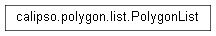

Manages all polygons present on the screen, writes to db on call
Informs the correct list’s blank to plot a corner of a rectangle
Deletes the shape from the list
Informs the correct list’s blank to draw a polyogon on the screen
Informs the correct list’s blank to draw a rectangle on the screen
Produces a unique tag for each shape for each session
Returns the number of polygons in the list, excluding the blanks
Hides all shapes drawn on the canvas
Saves the target polygon’s original position for movement tracking
Clears data on movement tracking
Calculates how far the polygon has moved and redraws the shape
Toggles displaying the shapes outline. When toggled, new shapes a drawn with only outlines
Recolors the shape
Informs the correct list’s blank to plot a point on the screen
Displays the properties of the selected polygon
Load data from JSON file into polygon shapes
Attempts to calculate the new coordinates of the polygon
Clears the screen and removes polygons from the list
Uses a blank shape to draw helper rectangles
Saves shapes to JSON for current plot only
Saves shape to JSON from all plots
Saves to database
Saves the initial scale
Determines which list currentList should alias
PolygonDrawer
PolygonReader
Enter search terms or a module, class or function name.